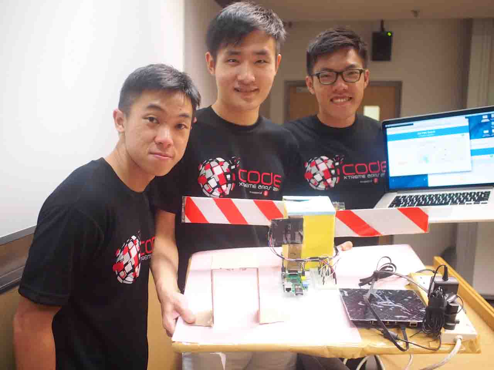
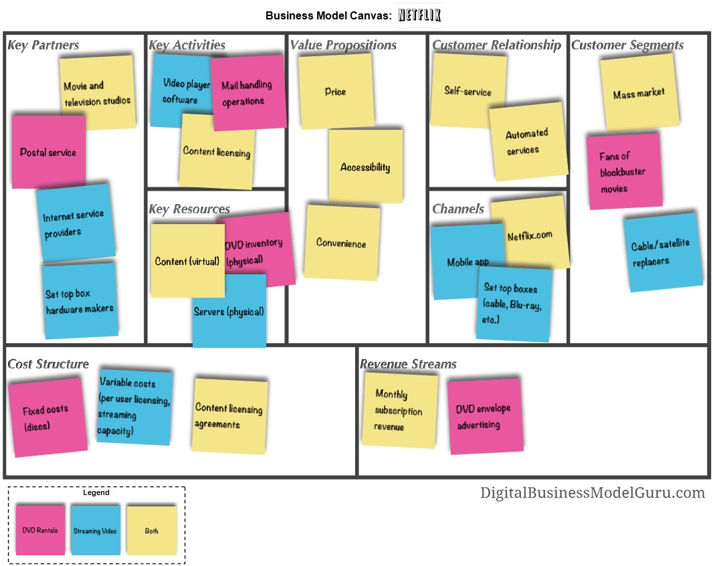

Welcome to Edison
Leadership development Plan.
Scroll through Edison leadership journey here.

Starting with the why
The world has an infinite supply of interesting problems. The world also has an infinite supply of important problems.
And I want to work on some of them in my lifetime.
Read MoreWhat am i going to do
I aspire to work as a Software Engineer in Facebook. I like to build things, and I believe that Facebook is shaping what could be the future.
Read MoreHow am I going to do it
Journey to the tech industry is not a walk in the park. There are tons of skills to learn - from soft skills to technical competency.
To get there, there are a few things that I have to do.
Read More
Working on important problems of the world
There are infinite supply of important problems. Technology should liberate and not enslave. In my lifetime, I want to work on solving problems to make people's life better. I have two visions, and I wish to work on them in my lifetime.
- Workplace of the future
- Future of transport - a more accessible transport for everyone?
Work from anywhere
Virtual workspace in the futureI believe that there will be big changes to the way we work. Enterprise mobility, driven by advancement in technology, will help to change the way we work in the future. People need not go to fixed places for their work, and all work and communication could be done online. Enterprises could save money by leveraging on productivity, and individuals will be empowered with autonomy. Win-win situation.
I want to study and design what could be they way we work in the future, looking into how the design of physical and virtual workspaces could shape network-enabled organizations in the future.
Accessible Transport
Making travel possible for everyoneTravel is a privillege. Some people may be able to travel anywhere they want, but most of us don't. Even if we do, we have to work long hours just to save for that one short getaway. Humans are explorers. Given our limited lifespan, I believe that all humans should be able to explore the world we live in, or to places we never thought we could venture into.
Career Aspiration
Software Engineer
I like to build things
Software Engineers are modern artisans - craftmen who can create the future with the skills we have.
I aspire to work as a Software Engineer in Facebook. I believe in their vision of creating the future of how people can connect to one another. By contributing as a Software Engineer, I want to work to bring that vision to life.
Software Engineer
At a tech company - FacebookI like to build things. Within the next five years, I aspire to become a software engineer in Facebook.
Facebook has big dreams and lots of resources. They collect lots of photos everyday, and through machine learning, they could pioneer the technology for next generation of autonomous vehicles. I want to build that.
Development in virtual reality - the next leap in human-computer interaction, is taking place at Facebook. Imagine you could fly through space, explore unchartered waters and live your fantasy dreams - all within the comfort of your home. I want to build that.
Facebook also develop on React.JS, and the core idea is web development and mobile development might not need to be seprated in future. I want to build that.
Leadership Competency
Leading effectively in self-maanged teams
As an engineer, we are expected to be self-driven and must lead others towards action. Through the various leadership assessments, I realised that though I may be strategic in thinking, I am weak in bringing people together.
Most software teams are organised in small teams for maximum efficiency. Agile development teams are very popular, and they operate in a manner similar to self-managed team. Team members take have a responsibility, and sometimes rotate leadership roles in different iterations.
Project management techniques
Good planning in Development Plans
Software developments are huge projects that comes with high investments and risks.
To mitigate these risks, software development requires careful planning and execution. From requirement gathering to design to development and testing, a proper framework must be in-place.
Technical Competency
Competency in web application technology
The nature of software development requires deep expertise knowledge, otherwise the 'expert' power. I am lacking in that aspect I feel.
To effectively manage software development teams, it is important to harness expert power as fellow engineers can relate better with a leader who is technically competent.
This meant that I must work hard and learn a deep expertise in software development.
Action Plans
Specific action plans to achieve my goalsImportance of education
While I am still in university, I want to get a good foundation in programming and management.
In my time at SMU and Carnegie Mellon University, I want to learn about best practices in industries and excel in my studies in these fields.
During my spare time, I want to grow professional by learning more programming concepts and languages so that it could facilitate my work in the future.
Internship at a StartUp
Tech Startups move fast, and I will join one of them in 2016. One can learn a lot by joining startups as work is more on getting product shipped instead of endless paperwork and meetings.
By joining a startup, I wish to hone my ability to work and lead teams. It will also give me a taste of what it's like to work in small self-managed teams. In a small company, it is easier for one to learn about team visions and product delivery.
If I join a technical position, it can also hone my programming competency and grow professionally by having real-life experience.
Working with Community
Being part of a community is a great way to connect to people and learn along the way. At Carnegie Mellon University, I wish to join the Metro21 and Future of Work to learn about the latest innovation.
I will continue to work on Open-source project on Github. Lots of developers spend their time to work on open-source, and through this channel, I can learn how to work in virtual teams with talents all over the world.
about me
Brief Introduction
I am Edison, a twenty-something undergraduate. I live in Singapore, and it is my home.
Education
At my third-year of studies at Singapore Management University now, I study Information Systems. I learn about management and tech stuffs here.
Where have I worked before?
Summer internship in Khoo Teck Puat Hospital - analytics stuffs there. Did tons of data analytics, data cleaning, and even developed a system for the hospital to use with Microsoft Excel. I also have marketing experience in Keppel Land and SalesForce.
Hobbies
When I am not studying, I enjoying walking around with my guitar, pretending that I know how to play it. I run a lot too, and love weekends where I can chill with my piano.
My Skills
-
JavaScript
%
-
Java
%
-
Database (PL/SQL and NoSQL Databases)
%
-
front-end development (HTML5/CSS3)
%
-
R (data analytics language)
%
Some of my projects
{kind=link}
{kind=link}
{kind=link}

{kind=link}